工場エネルギー使用量集計・分析システム 操作マニュアル
電力ロガーのデータと、エネルギー計算表・月報PET の Excel を読み込み、電力・燃料エネルギー・トータルエネルギーの使用量をグラフと表で確認するための手引きです。実際の画面と、図の中の番号（123…）に沿って操作を説明します。
1. システム概要と画面構成
このシステムは、ブラウザにファイルをドラッグ＆ドロップするだけで、工場のエネルギー使用量を集計し、グラフと表で表示します。集計した結果は Google スプレッドシートに保存でき、次に開いたときは保存した内容が自動で表示されます。
画面は1ページで、上部のボタンで次の3つを切り替えます。
| 画面 | 分かること |
|---|---|
| 電力 | 電力量を、品種別・設備別・日別に確認できます。操業時間、生産本数、1本あたりの電力量やコストも表示します。 |
| 燃料エネルギー | A重油と LNG の熱量と費用を、品種別に確認できます。1本あたり・1分あたりの燃料エネルギーやコストも表示します。 |
| トータルエネルギー | 工場全体の生産量、エネルギー使用量（原油換算）、熱量、原単位、CO2排出量を、月別と年度別に確認できます。 |
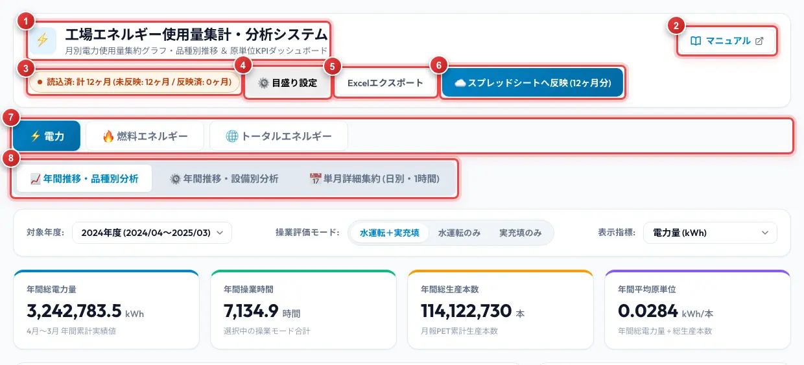
| 番号 | 名称 | 説明 |
|---|---|---|
| 1 | タイトル | システムの名前と、表示している画面の説明です。 |
| 2 | マニュアル | このマニュアルを別のタブで開きます。画面の右上にあります。 |
| 3 | 反映状況 | 読み込んだ月数と、スプレッドシートへ反映した月数です（7章）。データを読み込むと表示されます。 |
| 4 | 目盛り設定 | 電力のグラフの縦軸の上限を設定します（4.3）。電力の画面でだけ表示されます。 |
| 5 | Excelエクスポート | スプレッドシートに保存した内容を、Excel ファイルとしてダウンロードします（7.3）。 |
| 6 | スプレッドシートへ反映 | 表示している画面のデータを、スプレッドシートへ保存します（7.2）。 |
| 7 | 画面の切替 | 電力燃料エネルギートータルエネルギーを切り替えます。 |
| 8 | 電力の表示の切替 | 電力の画面でだけ表示されます。年間推移・品種別分析年間推移・設備別分析単月詳細集約 (日別・1時間)を切り替えます。 |
2. 使い始める前に
2.1 用意するファイル
このシステムが読み込むファイルは、次の3種類です。画面によって必要なファイルが違います。
| ファイル | 内容 | 電力 | 燃料エネルギー | トータルエネルギー |
|---|---|---|---|---|
| 電力ロガーのデータ （TXT / CSV） |
設備ごとの電力の1分ごとの記録です。1日につき5種類（tag02・04・05・06・07）のファイルがあります。 | 必要 | 操業時間を使う項目に必要 | 不要 |
| エネルギー計算表 （Excel） |
電気料金、A重油・LNG の熱量と費用、生産数量、CO2排出量などを、年度ごとのシートにまとめたファイルです。 | 電力量単価に使用 | 必要 | 必要 |
| 月報PET （Excel） |
品種ごとの生産本数を、年度ごとのシートにまとめたファイルです。 | 生産本数に使用 | 必要 | 表示する年度を決めるために必要 |
2.2 年度の考え方
このシステムの年度は、4月から翌年3月までです。たとえば「2024年度」は、2024年4月から2025年3月までを指します。
Excel は、対象の年度のシートだけを読みます。シートの名前に年度の数字（例: 2024）が入っている必要があります。
2.3 作業の流れ
- 共有された URL を、ブラウザ（Google Chrome を推奨）で開きます。スプレッドシートに保存済みのデータがあれば、自動で表示されます。
- 電力の画面で、対象の月の電力ロガーのデータと、Excel 2種を投入します（3章）。
- 電力・燃料エネルギー・トータルエネルギーの各画面で、グラフと表を確認します（3〜6章）。
- 画面ごとにスプレッドシートへ反映を押して保存します（7章）。
3. 【電力】データの読み込みと単月の確認
電力のデータは、単月詳細集約 (日別・1時間)の画面で読み込みます。読み込むと、その月の日別のグラフと集計表が表示され、年間推移の画面（4章）にも反映されます。
3.1 ファイルの投入
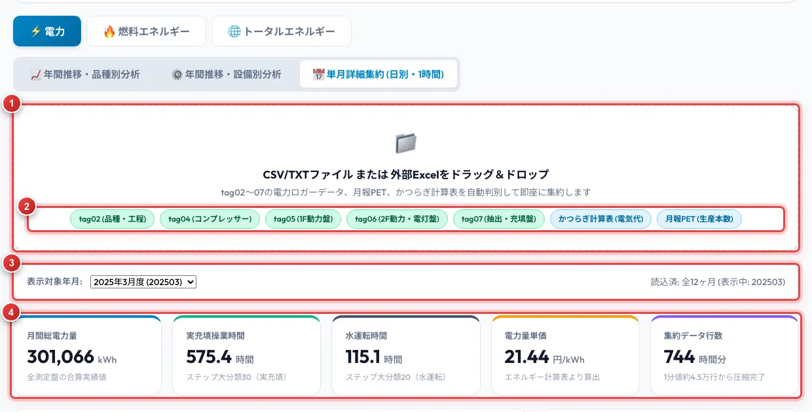
- 画面の切替で電力を選び、単月詳細集約 (日別・1時間)を開きます。
- 投入欄1に、対象の月の電力ロガーのファイルをドラッグ＆ドロップします。月のフォルダごとドロップすることも、投入欄をクリックしてファイルを選ぶこともできます。
- エネルギー計算表と月報PET も、同じ投入欄に入れます。ロガーのファイルと一緒に入れても、後から Excel だけを入れても構いません。
- 読み込みと集計が終わると、読み込んだ月が自動で表示されます。
3.2 読み込み結果の確認
- ファイルの種類の表示2: 読み込めた種類に色が付きます。ロガーの5種類（tag02〜tag07）と、かつらぎ計算表 (電気代)月報PET (生産本数)のすべてに色が付いていることを確認してください。
- 表示する月の選択3: 表示対象年月:で、読み込み済みの月を切り替えます。
- 月の集計値4: 月間総電力量実充填操業時間水運転時間電力量単価などを表示します。
3.3 日別のグラフと集計表
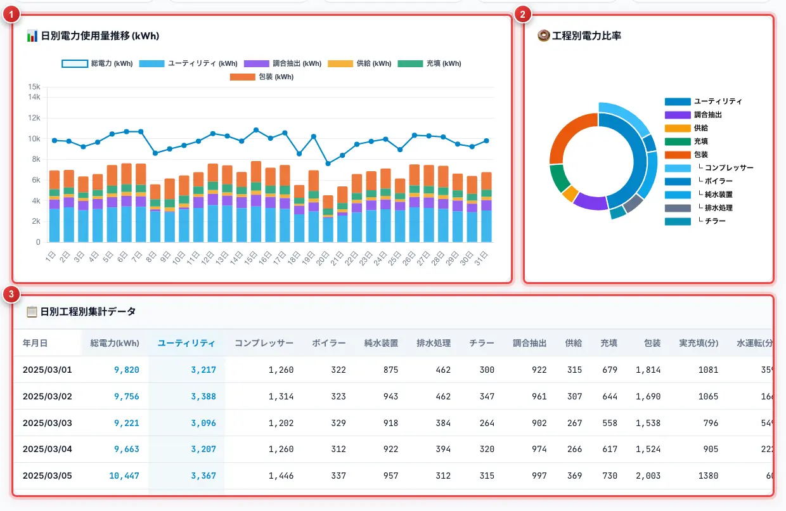
- 日別電力使用量推移 (kWh)1: 日ごとの電力量です。棒は工程ごとの内訳、折れ線は総電力です。
- 工程別電力比率2: その月の電力量の工程ごとの割合です。内側の円が工程、外側の円がユーティリティの内訳（コンプレッサー、ボイラーなど）です。
- 日別工程別集計データ3: 日ごとの工程別の電力量と、実充填・水運転の時間（分）です。表の中をスクロールすると、月末まで見られます。
4. 【電力】年間推移の確認
読み込んだ月のデータを年度ごとにまとめて、月別の推移を確認します。データのある月だけで集計するため、年度の途中でも表示できます。
4.1 品種別分析
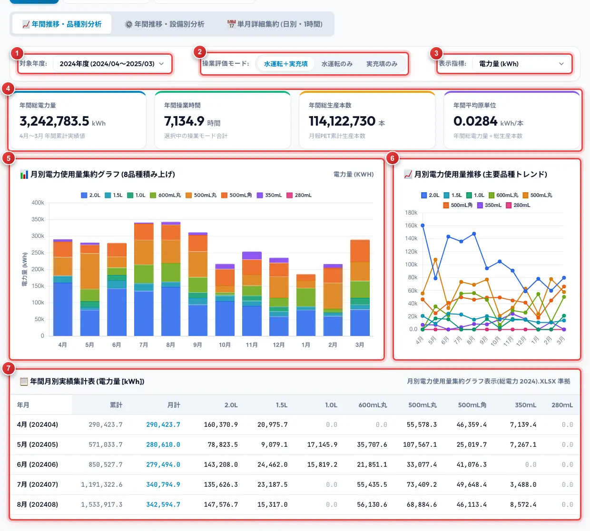
| 番号 | 名称 | 説明 |
|---|---|---|
| 1 | 対象年度: | 表示する年度を選びます。データを読み込んだ年度だけが選べます。 |
| 2 | 操業評価モード: | 集計の対象にする時間を選びます。水運転＋実充填水運転のみ実充填のみの3つです。 |
| 3 | 表示指標: | グラフと表に表示する項目を、下の8種類から選びます。 |
| 4 | 年間の集計値 | 選んだ年度・操業評価モードでの、電力量、操業時間、生産本数、1本あたりの電力量です。 |
| 5 | 月別の集約グラフ | 8品種の月別の値です。電力量などの量を表す項目は積み上げ、1本あたり・1分あたりの項目は品種ごとの棒と全体平均の折れ線で表示します。 |
| 6 | 品種別の推移 | 品種ごとの月別の推移を、折れ線で表示します。 |
| 7 | 年間月別実績集計表 | 4月から3月までの、累計・月計・8品種の値と、年間の合計です。 |
表示指標で選べる項目は、次の8種類です。
| 項目 | 内容 |
|---|---|
| 電力量 (kWh) | 品種ごとの電力量です。 |
| 操業時間 (分) | 品種ごとの操業時間です。 |
| 生産本数 (本) | 月報PET の品種ごとの生産本数です。 |
| 単位本電力量 (kWh/本) | 1本あたりの電力量です。 |
| 単位時間電力量 (kWh/分) | 操業1分あたりの電力量です。 |
| 電力コスト (円) | 電力量に、その月の電力量単価を掛けた金額です。 |
| 単位本コスト (円/本) | 1本あたりの電力コストです。 |
| 単位時間コスト (円/分) | 操業1分あたりの電力コストです。 |
4.2 設備別分析
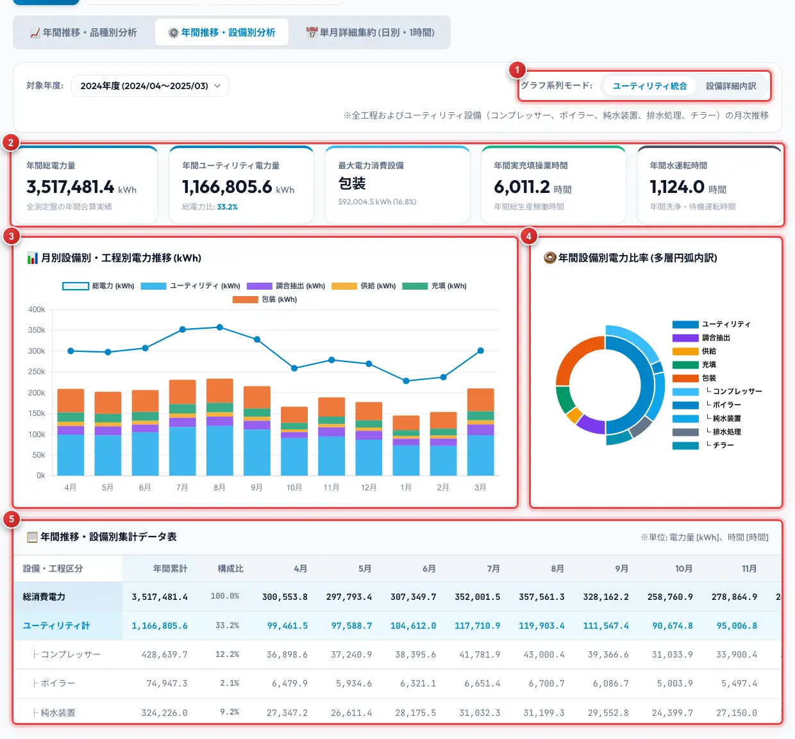
- グラフ系列モード:1: ユーティリティ統合は、ユーティリティ・調合抽出・供給・充填・包装の5工程で表示します。設備詳細内訳は、ユーティリティをコンプレッサー・ボイラー・純水装置・排水処理・チラーに分けて表示します。
- 年間の集計値2: 年間の総電力量、ユーティリティの電力量と割合、電力量が最も大きい設備、実充填・水運転の時間です。
- 月別設備別・工程別電力推移 (kWh)3: 月ごとの電力量を、工程・設備ごとに積み上げて表示します。折れ線は総電力です。
- 年間設備別電力比率 (多層円弧内訳)4: 年間の電力量の、工程・設備ごとの割合です。
- 年間推移・設備別集計データ表5: 工程・設備ごとの年間累計、構成比、月別の値です。
4.3 グラフの目盛り設定
電力のグラフの縦軸の上限は、目盛り設定で変えられます。月や年度を比べやすいように、上限をそろえたいときに使います。
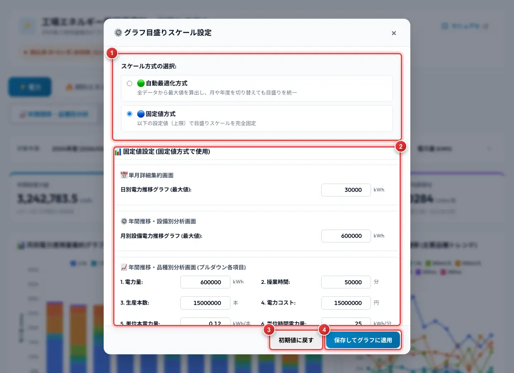
- 方式の選択1: 自動最適化方式は、読み込んだすべてのデータの最大値から上限を決めます。月や年度を切り替えても目盛りは変わりません。通常はこちらを使います。固定値方式は、入力した値を上限にします。
- 固定値の入力2: 固定値方式のときに使う上限を、グラフごと・項目ごとに入力します。
- 初期値に戻す3: 設定を最初の状態に戻します。
- 保存してグラフに適用4: 設定を保存して、グラフに反映します。
5. 【燃料エネルギー】
A重油と LNG を合わせた燃料エネルギー（熱量）と費用を、品種別に表示します。月ごとの燃料エネルギーは、品種ごとの液量（本数 × 1本あたりの容量）の割合で、8品種に分けています。
5.1 画面の見方
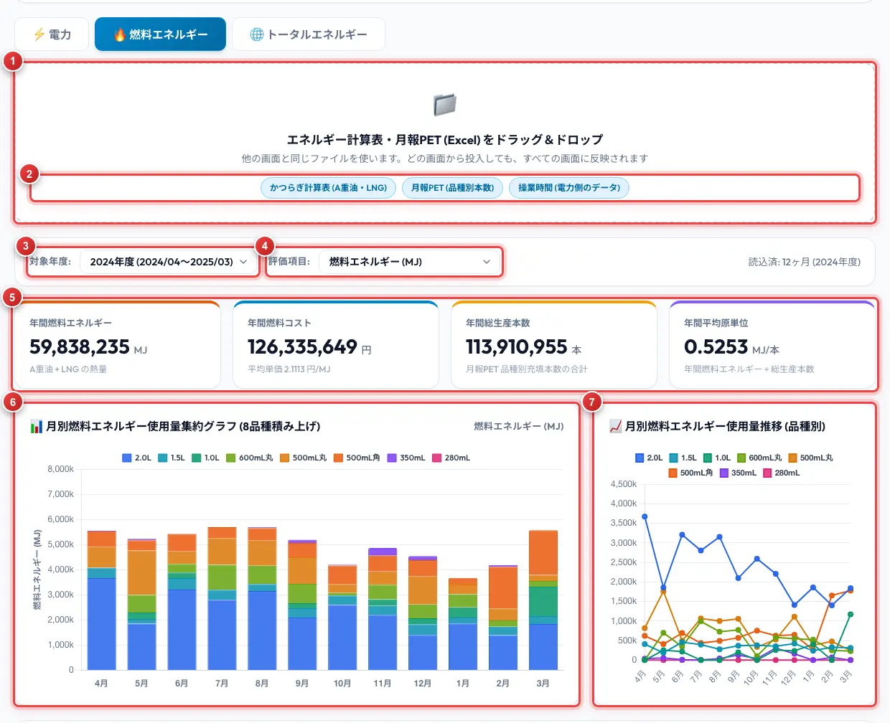
| 番号 | 名称 | 説明 |
|---|---|---|
| 1 | 投入欄 | エネルギー計算表と月報PET を投入します。電力の画面で投入済みであれば、あらためて入れる必要はありません。 |
| 2 | データの状況 | 使えるデータに色が付きます。操業時間 (電力側のデータ)は、電力の画面でロガーのデータを読み込んでいる（または保存済みの）ときに色が付きます。 |
| 3 | 対象年度: | 表示する年度を選びます。月報PET にシートがある年度だけが選べます。 |
| 4 | 評価項目: | グラフと表に表示する項目を、8種類から選びます（5.2）。 |
| 5 | 年間の集計値 | 年間の燃料エネルギー、燃料コストと平均単価、生産本数、1本あたりの燃料エネルギーです。 |
| 6 | 月別の集約グラフ | 8品種の月別の値です。量を表す項目は積み上げ、1本あたり・1分あたりの項目は品種ごとの棒と全体平均の折れ線で表示します。 |
| 7 | 品種別の推移 | 品種ごとの月別の推移を、折れ線で表示します。 |
5.2 評価項目と集計表
| 評価項目 | 内容 |
|---|---|
| 燃料エネルギー (MJ) | A重油と LNG の熱量の合計を、品種別に分けた値です。 |
| 操業時間 (分) | 品種ごとの操業時間（水運転＋実充填）です。電力の画面のデータを使います。 |
| 生産本数 (本) | 月報PET の品種ごとの本数です。 |
| 単位本燃料エネルギー (MJ/本) | 1本あたりの燃料エネルギーです。 |
| 単位時間燃料エネルギー (MJ/分) | 操業1分あたりの燃料エネルギーです。 |
| 燃料エネルギーコスト (円) | A重油と LNG の購入費用の合計を、品種別に分けた値です。 |
| 単位本コスト (円/本) | 1本あたりの燃料コストです。 |
| 単位時間コスト (円/分) | 操業1分あたりの燃料コストです。 |
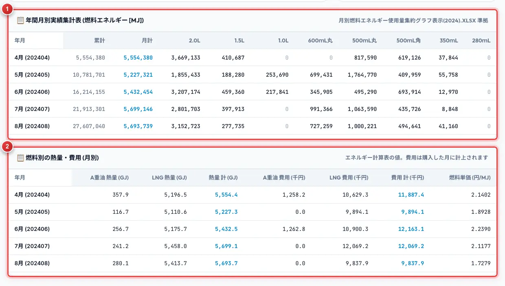
- 年間月別実績集計表1: 選んだ評価項目の、累計・月計・8品種の値です。1本あたり・1分あたりの項目の累計は、年度の初めからの合計どうしで計算した値です。
- 燃料別の熱量・費用 (月別)2: エネルギー計算表から読んだ、A重油と LNG の熱量と購入費用、それぞれの合計、燃料の単価です。
5.3 「---」と表示される場合
| 表示 | 原因 | 対処 |
|---|---|---|
| 品種別の値と、1本あたりの項目が「---」になり、グラフが灰色の棒になる | 月報PET で、その月の品種別の本数が入力されていません。 | 月報PET に本数を入力して、投入し直してください。月計は表示されます。 |
| 操業時間と、1分あたりの項目が「---」になる | その月の電力のデータがありません。 | 電力の画面で、その月のロガーのデータを投入してください（3章）。 |
| 画面に何も表示されない | エネルギー計算表と月報PET の両方が読み込まれていません。 | 両方の Excel を投入してください。 |
6. 【トータルエネルギー】
エネルギー計算表にまとめられている、工場全体の生産量、エネルギー使用量、熱量、原単位、CO2排出量を表示します。値はエネルギー計算表で計算されたものをそのまま使い、原単位などの割り算だけをこのシステムで行います。
6.1 月別の表示
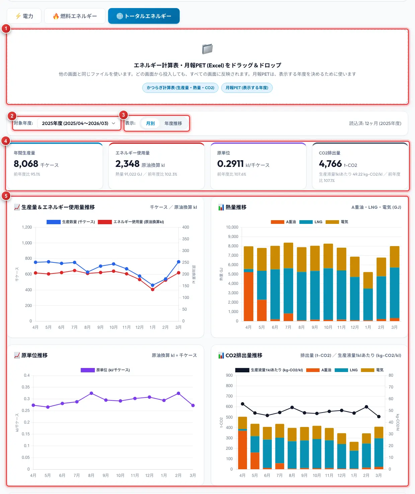
| 番号 | 名称 | 説明 |
|---|---|---|
| 1 | 投入欄 | エネルギー計算表と月報PET を投入します。他の画面で投入済みであれば、あらためて入れる必要はありません。月報PET は、表示する年度を決めるために使います。 |
| 2 | 対象年度: | 表示する年度を選びます。 |
| 3 | 表示: | 月別と年度推移を切り替えます。 |
| 4 | 年間の集計値 | 対象年度の、年間生産量、エネルギー使用量（原油換算）、原単位、CO2排出量と、それぞれの前年度比です（6.3）。 |
| 5 | 4つのグラフ | 下の表の4つのグラフを表示します。 |
| グラフ | 内容 |
|---|---|
| 生産量＆エネルギー使用量推移 | 生産数量（千ケース、左の目盛り）と、エネルギー使用量（原油換算 kl、右の目盛り）の推移です。 |
| 熱量推移 | A重油・LNG・電気の熱量（GJ）を積み上げて表示します。 |
| 原単位推移 | 生産数量1千ケースあたりのエネルギー使用量（原油換算 kl）です。 |
| CO2排出量推移 | 棒は A重油・LNG・電気の CO2排出量（t-CO2、左の目盛り）、折れ線は生産液量 1kl あたりの CO2排出量（kg-CO2/kl、右の目盛り）です。 |
グラフの下の集計表には、月ごとの生産数量、熱量、原油換算量、原単位、CO2排出量と、年間の合計を表示します。原単位 累計の列は、年度の初めからその月までの合計で計算した原単位です。
6.2 年度推移の表示
年度推移を選ぶと、同じ4つのグラフと表を、年度ごとの年間の値で表示します。
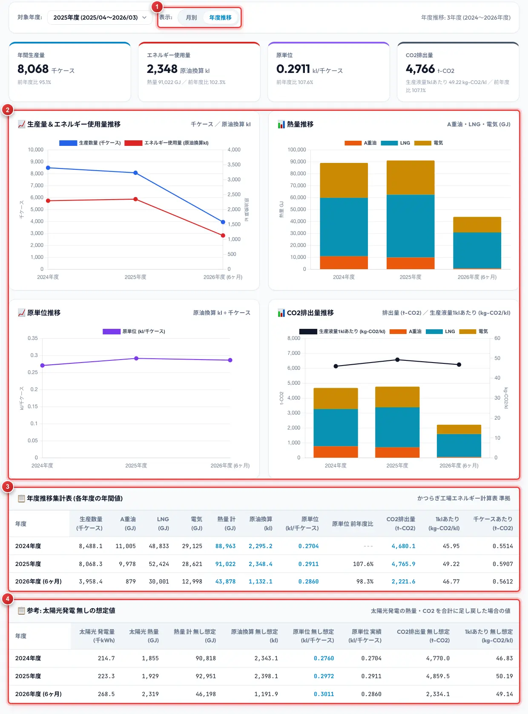
- 表示の切替1: 年度推移を選んだ状態です。上の集計値は、対象年度:で選んだ年度の値のままです。
- 4つのグラフ2: 横軸が年度になります。
- 年度推移集計表3: 年度ごとの年間の値です。原単位 前年度比の列に、前の年度に対する原単位の割合を表示します。
- 太陽光発電の参考表4: 6.3 を参照してください。
6.3 前年度比と太陽光発電の参考表
- 前年度比: 前の年度も表示されている場合に表示します。表示されている中で最も古い年度は「---」になります。
- 量の前年度比: 年間生産量とエネルギー使用量の前年度比は、その年度と前の年度の両方が12か月そろっている場合だけ表示します。
- 参考: 太陽光発電 無しの想定値: 太陽光発電のデータがある年度に表示します。電気の熱量と CO2排出量は購入した電力の分で、太陽光で発電した分は含まれていません。この表では、太陽光の分を足し戻した場合の熱量、原油換算量、原単位、CO2排出量を確認できます。
7. スプレッドシートへの反映と Excel エクスポート
読み込んだデータは、スプレッドシートへ反映すると保存されます。保存したデータは、次にシステムを開いたときに自動で表示されます。
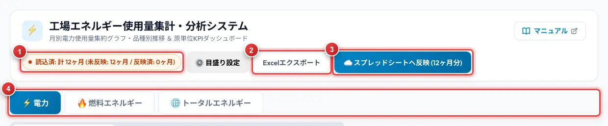
7.1 反映状況の見方
反映状況1には、表示している画面のデータについて、読み込んだ月数と、まだ反映していない月数を表示します。
| 表示の例 | 意味 |
|---|---|
| 読込済: 計 12ヶ月 (未反映: 12ヶ月 / 反映済: 0ヶ月) | 12か月分を読み込んでいて、まだ1か月も保存していません。 |
| 読込済: 計 12ヶ月 (全 12ヶ月 反映済み) | 読み込んだ12か月分が、すべて保存されています。 |
| 燃料 読込済: … ／ トータル 読込済: … | 燃料エネルギー、トータルエネルギーの画面を表示しているときは、その画面のデータの状況を表示します。 |
7.2 反映の手順
- 画面の切替4で、保存したいデータの画面（電力・燃料エネルギー・トータルエネルギー）を表示します。
- スプレッドシートへ反映3を押します。まだ反映していない月だけが保存されます。
- 保存が終わると、画面の右下に完了の知らせが表示され、反映状況が「反映済み」に変わります。
- 他の画面のデータも保存する場合は、画面を切り替えて、同じ操作を繰り返します。
- すべて反映済みのときに押した場合: 全部の月を上書きしてよいかを確認する画面が出ます。保存し直したいときだけ「OK」を押してください。
- 「未反映」に戻る場合: 反映した後でも、ロガーのファイルを読み直した月や、Excel を投入して本数・単価・熱量などの値が変わった月は、未反映に戻ります。内容を確認して、もう一度反映してください。
7.3 Excel エクスポート
Excelエクスポート2を押すと、スプレッドシートに保存されている内容を、Excel ファイルとしてダウンロードします。どの画面から押しても、電力・燃料エネルギー・トータルエネルギーのシートをまとめて出力します。
8. 【管理者編】更新と保守の要点
システムを更新・保守する方に向けた要点です。初回のセットアップなどの詳しい手順は、開発用の資料「セットアップ・運用手順書」を参照してください。
8.1 Apps Script に置くファイル
このシステムは、スプレッドシートに付属する Apps Script 上で動きます。Apps Script に置くファイルは、次の4つです。
| Apps Script 上の名前 | 種類 | 役割 |
|---|---|---|
| Code.gs | スクリプト | 画面の表示と、スプレッドシートへの保存・読み込みを行います。 |
| Config.gs | スクリプト | シートの名前や列などの設定です。 |
| index.html | HTML | システムの画面です。 |
| manual.html | HTML | このマニュアルです。 |
8.2 更新するとき
- スプレッドシートのメニューの「拡張機能」から「Apps Script」を開きます。
- 変更のあったファイルを開き、中身をすべて新しい内容に貼り替えて保存します。
- 右上の「デプロイ」から「デプロイを管理」を開き、新しいバージョンとして公開し直します。
- システムを開き直して、保存済みのデータが表示されること、反映とエクスポートができることを確認します。
8.3 スプレッドシートのシート
データは、次の6つのシートに保存されます。シートは、最初に反映したときに自動で作られます。
| シート | 内容 | 単位 |
|---|---|---|
| 1時間集計(ALL) | 電力の、設備ごとの1時間ごとの電力量と操業時間です。画面には表示しません。 | 1時間に1行 |
| 日別集約 | 電力の、工程ごとの日別の電力量と操業時間です。 | 1日に1行 |
| KPI評価 | 電力の、月ごとの総電力量、操業時間、生産本数、原単位、単価です。 | 1か月に1行 |
| 品種別集約 | 電力の、品種ごとの本数、電力量、操業時間です。 | 1か月に1行 |
| 燃料集約 | 燃料エネルギーの、A重油・LNG の熱量と費用、品種ごとの本数です。 | 1か月に1行 |
| トータルエネルギー集約 | トータルエネルギーの、生産数量、熱量、原油換算量、CO2排出量、太陽光発電の値です。 | 1か月に1行 |
9. 付録・FAQ
9.1 用語
| 用語 | 意味 |
|---|---|
| 年度 | 4月から翌年3月までの1年間です。 |
| 実充填・水運転 | 充填の設備が動いている時間の区分です。実充填は製品を充填している時間、水運転は水で運転している時間です。 |
| 操業評価モード | 電力の集計で、どの時間を対象にするかの選択です（水運転＋実充填、水運転のみ、実充填のみ）。 |
| 原単位 | 生産量あたりのエネルギー使用量です。電力では 1本あたりの電力量（kWh/本）、燃料エネルギーでは 1本あたりの熱量（MJ/本）、トータルエネルギーでは 1千ケースあたりの原油換算量（kl/千ケース）を表示します。 |
| 原油換算 | 電気や燃料の熱量を、原油の量（kl）に置き換えて表したものです。種類の違うエネルギーを合計して比べるために使います。 |
| GJ・MJ | 熱量の単位です。1 GJ は 1,000 MJ です。 |
| t-CO2 | CO2排出量の単位（トン）です。 |
| ユーティリティ | コンプレッサー、ボイラー、純水装置、排水処理、チラーなど、生産を支える共通の設備です。 |